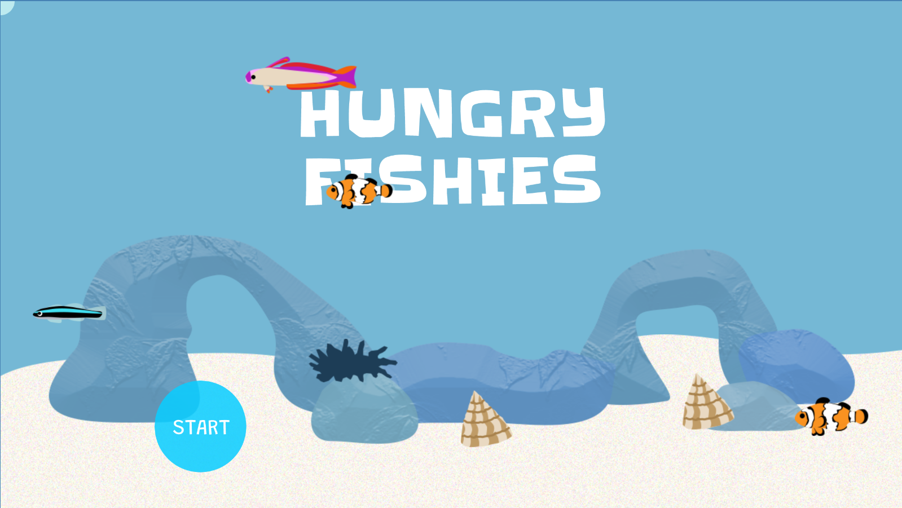
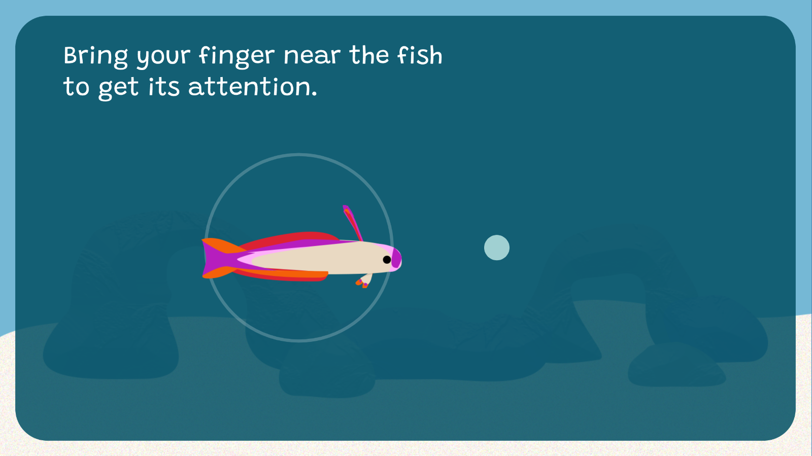
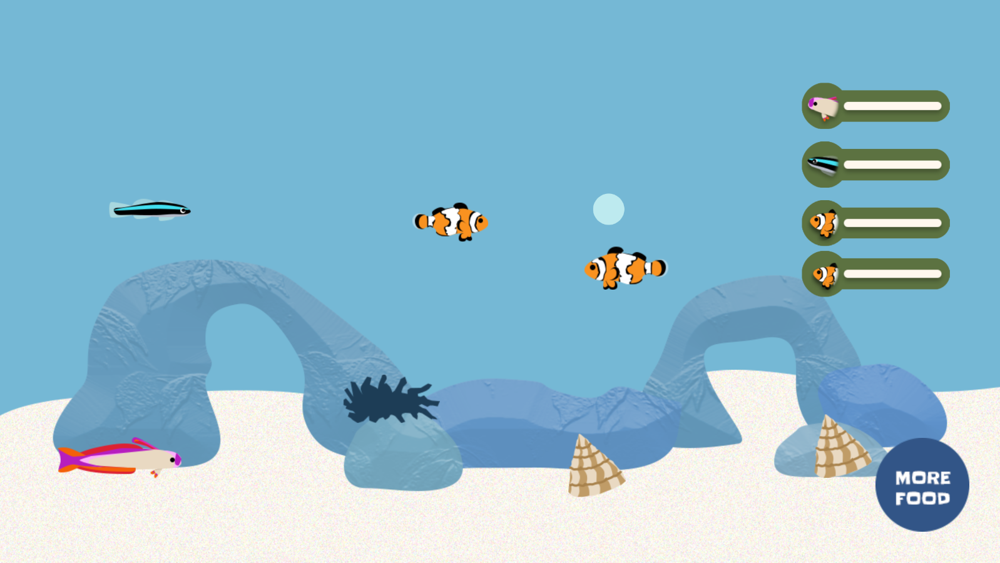
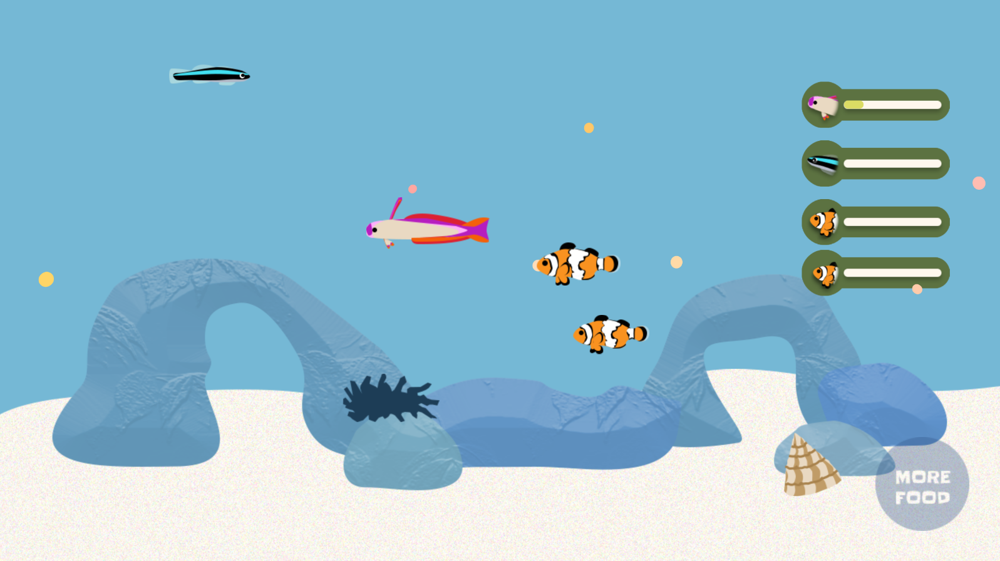
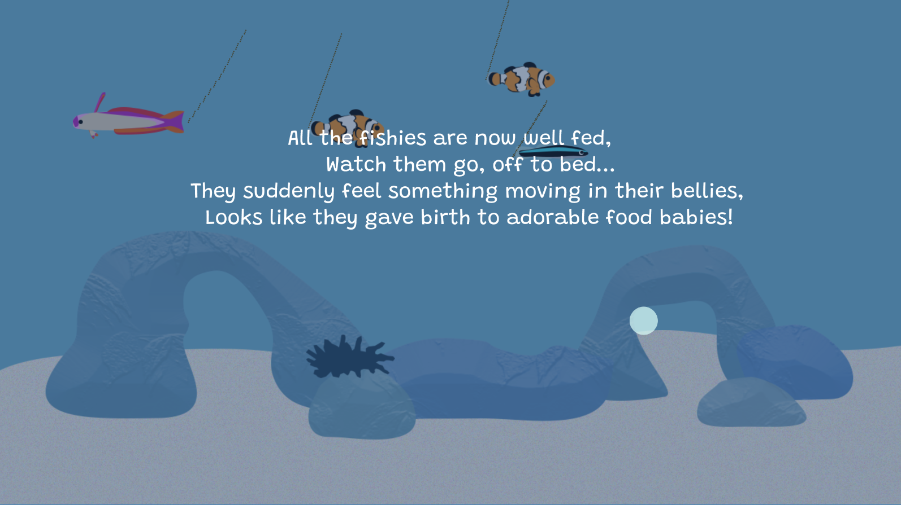

I designed an interactive game using JavaScript's p5.js and p5.sound libraries. I simulated a fish tank environment containing adorable fish and creatures that each have their unique personalities and quirks. The user's goal is to feed the fish by guiding them to the food using a finger.
For my technical explorations, I relied on the powerful effect that emerges by combining object-oriented programming, inheritance, and arrays. This allowed me to make modular fish that possess different behaviours and keep track of their separate food intake. Because many objects interacted with each other (like the fish and the food, or the food and the food tracker), I practiced providing objects as parameters to the methods of other objects.


My greatest technical achievements were implementing automatic movement in the fish and getting the clownfish to feed the anemone. The clownfish would either grab the food and swim off to the side of the tank, or eat the food it was supposed to feed the anemone - how frustrating! Yet, when I got it to work, it was also the most satisfying accomplishment I felt during the whole project.

I created all the images in Photoshop. I incorporated interactivity in all stages of the game (e.g. in the rules and with the musical fish). I also introduced lively colors to the tank’s inhabitants and animated their images to make them feel more realistic.

The players who successfully satisfy the bellies of all the ravenous fish are rewarded with the product of my poetic skills and the fish’s pooping skills.
